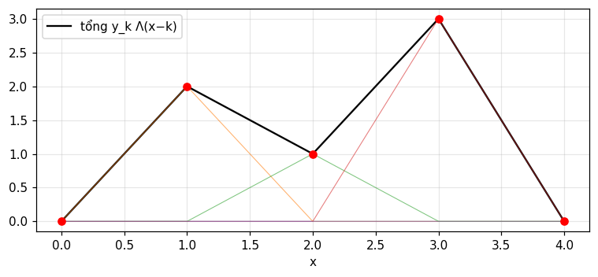
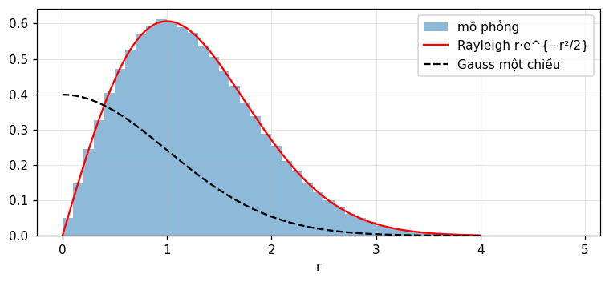
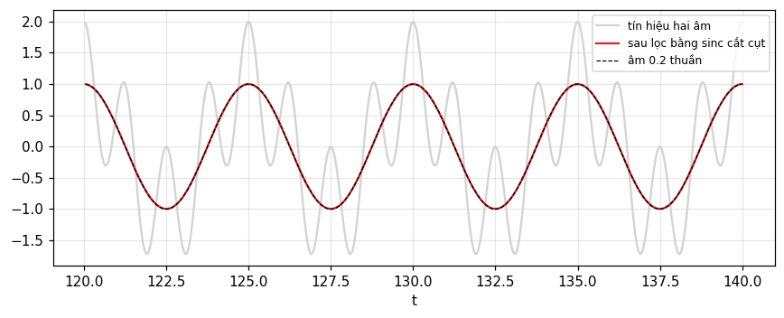
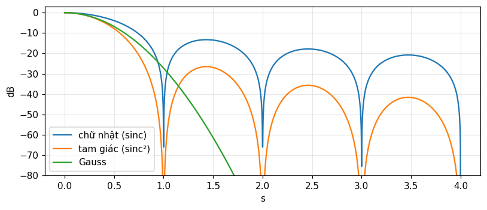

Ký hiệu cho các hàm hữu ích: Π, Λ, H, sgn, sinc, Gauss
Viết được hàm từng khúc bằng \Pi, \Lambda, H, \text{sgn}, R thay vì các điều kiện tách khúc.
Dùng chuẩn hóa Gauss e^{-\pi x^2} và đọc các thông số phân tán của nó.
Nêu tính chất của \text{sinc} và \text{sinc}^2: điểm không, diện tích, tần số cắt, vai trò lọc thông thấp.
Hiểu vì sao tích chập với H là tích phân, và vì sao hiếm khi cần nêu H(0).
So sánh các cửa sổ chữ nhật, tam giác và Gauss qua thùy phụ của biến đổi.
Dùng nút, chấm tròn hoặc phím ← → để chuyển slide.
PHẦN 1/5
01
Xung chữ nhật và tam giác
Bối cảnh: Nhiều hàm hữu ích trong phân tích Fourier phải định nghĩa từng khúc vì thay đổi đột ngột.
Vướng mắc: Một hàm như "bậc thang có dốc" đơn giản về vật lý nhưng cồng kềnh khi viết từng khúc, khó so với 1+x^2.
Giải pháp: Đưa ra ký hiệu riêng cho vài hàm cơ bản để lấy lại sự gọn gàng.
Vì sao cần ký hiệu
Xung chữ nhật \Pi như một cổng
Xung tam giác \Lambda và hàm đa giác
1/5 · Xung chữ nhật và tam giác
Bài toán: hàm cho bằng đồ thị
Hàm f(x) bằng 0 khi x<0, bằng x khi 0\le x\le1 và bằng 1 khi x>1 đơn giản nhưng viết từng khúc thì cồng kềnh, so với biểu thức gọn của 1+x^2. Về mặt vật lý, một "bậc thang có dốc" có thể đơn giản không kém một hàm trơn (Bracewell, tr. 55).
1/5 · Xung chữ nhật và tam giác
Fourier và hàm cho bằng đồ thị
Chính Fourier quan tâm tới việc biểu diễn các hàm cho bằng đồ thị. Theo nhà toán học và sử học người Anh E. W. Hobson, ông là người đầu tiên hiểu trọn vẹn rằng một hàm có thể gồm các phần rời nhau cho tùy ý bằng đồ thị (tr. 55). Chương này giới thiệu ký hiệu để lấy lại sự gọn và rõ.
1/5 · Xung chữ nhật và tam giác
Xung chữ nhật \Pi(x)
Xung chữ nhật đơn vị cao 1 và đáy 1, tâm ở gốc (hình 4.1, tr. 55 đến 56):
f(x)=\Pi(x)\cos\pi x là ký hiệu gọn cho hàm bằng \cos\pi x trong |x|<\tfrac12 và 0 ở ngoài (hình 4.2). Nhân với \Pi chọn ("cổng") một đoạn của hàm bất kỳ. Năng lượng của đoạn đó là \int\Pi(x)\cos^2\pi x\,dx = 0.5 (tr. 56).
1/5 · Xung chữ nhật và tam giác
Xung dịch, cao h, đáy b
Hàm h\,\Pi[(x-c)/b] là xung chữ nhật cao h, đáy b, tâm tại x=c (hình 4.3). Chỉ bằng nhân với một xung dịch phù hợp ta chọn được mọi đoạn với mọi biên độ và đưa phần còn lại về 0 (tr. 56). Ví dụ h=3, b=2, c=1: diện tích hb = 6, tích phân số trùng.
Xung chữ nhật tổng quát
h\,\Pi\!\left(\frac{x-c}{b}\right):\quad\text{cao}\ h,\ \text{đáy}\ b,\ \text{tâm}\ c
1/5 · Xung chữ nhật và tam giác
Xung chữ nhật đi vào đâu: trung bình trượt và lọc
Qua tích chập, nó cho trung bình trượt (module 3).
Ở miền tần số, nhân với nó là lọc thông thấp lý tưởng.
Nó là "thừa số gián đoạn Dirichlet" trong lý thuyết hội tụ chuỗi Fourier.
Các tên khác: rect x, hàm cổng, hàm cửa sổ, hàm boxcar (tr. 57).
1/5 · Xung chữ nhật và tam giác
Giá trị tại chỗ nhảy hầu như không quan trọng
Bracewell hầu như không nêu \Pi(\pm\tfrac12), và cũng không nên nhấn mạnh giá trị \tfrac12 ở giữa bước nhảy khi vẽ, giống một dao động ký chất lượng cao không hiện điểm sáng thêm giữa bước nhảy (tr. 57). Lý do: một điểm không đổi tích phân. Số đo: diện tích với \Pi(\pm\tfrac12)=0, \tfrac12 hoặc 1 khác nhau tối đa 2.0e-04, cỡ sai số của lưới.
1/5 · Xung chữ nhật và tam giác
Xung tam giác \Lambda(x)
Xung tam giác cao 1 và diện tích 1. Nó quan trọng chủ yếu vì là tự tích chập của \Pi(x), và còn cho ký hiệu gọn cho hàm đa giác, tức hàm liên tục gồm các đoạn thẳng (tr. 57). h\Lambda(x/b) có chiều cao h, đáy 2b và diện tích hb.
Tích chập số của \Pi với chính nó trên lưới mịn lệch 1-|x| tối đa 1.1e-16, diện tích 1. Hàm đa giác qua các điểm (0,0),(1,2),(2,1),(3,3),(4,0) bằng \sum y_k\Lambda(x-k): lệch interp tối đa 1.1e-16, và tại x=2.5 bằng 2.

Hình 1. Hàm đa giác qua năm điểm (đen) là tổng của các tam giác Λ dịch và nhân với tung độ tại điểm nút (đường mảnh).
PHẦN 2/5
02
Hàm mũ, Gauss và Rayleigh
Bối cảnh: Gauss xuất hiện khắp nơi, nhưng mỗi ngành chuẩn hóa nó một kiểu.
Vướng mắc: Chuẩn hóa thống kê (diện tích 1 và \sigma=1) làm biến đổi Fourier của Gauss không cùng dạng với chính nó.
Giải pháp: Bracewell chọn e^{-\pi x^2}: tung độ trung tâm bằng 1, diện tích bằng 1, và tự biến đổi.
Bốn hàm mũ
Chuẩn hóa Gauss và các thông số phân tán
Rayleigh và bước đi của người say
2/5 · Hàm mũ, Gauss và Rayleigh
Bốn hàm mũ
Hình 4.5 cho từ trái sang phải: hàm mũ tăng, hàm mũ giảm, hàm mũ giảm cắt cụt và hàm mũ giảm hai phía (tr. 57).
Tên
Công thức
tăng
e^{x}
giảm
e^{-x}
giảm cắt cụt
e^{-x}H(x)
hai phía
e^{-|x|}
2/5 · Hàm mũ, Gauss và Rayleigh
Chuẩn hóa Gauss của Bracewell
Hàm \exp(-\pi x^2) được chọn để cả tung độ trung tâm lẫn diện tích dưới đường cong đều bằng 1, và biến đổi Fourier của nó cũng là Gauss chuẩn hóa y hệt (tr. 58). Notebook đo diện tích 1, tung độ trung tâm 1, và giá trị trung bình của x^2 là 0.1592.
Trong thống kê, Gauss là "phân phối chuẩn (sai số) trung bình 0" chuẩn hóa để diện tích và độ lệch chuẩn bằng 1. Khi độ lệch chuẩn là \sigma, tung độ xác suất là \frac{1}{\sigma\sqrt{2\pi}}e^{-x^2/2\sigma^2}, với tung độ trung tâm 0.3989/\sigma (tr. 58). So với e^{-\pi x^2} thì \sigma=(2\pi)^{-1/2} = 0.3989.
Tung độ xác suất
\frac{1}{\sigma\sqrt{2\pi}}\,e^{-x^2/2\sigma^2}
2/5 · Hàm mũ, Gauss và Rayleigh
Tích phân sai số erf, erfc và tích phân xác suất
Tích phân sai số \text{erf}\,x=\frac{2}{\sqrt\pi}\int_0^xe^{-t^2}dt và phần bù \text{erfc}\,x=1-\text{erf}\,x; tích phân xác suất a(x) được tra bảng rộng rãi. Với Gauss của sách, \int_0^xe^{-\pi t^2}dt=\tfrac12\text{erf}(\sqrt\pi\,x) (tr. 58 đến 59). Tại x=1: tích phân số và công thức cho 0.4939.
Sách nêu năm thông số (tr. 59); notebook tính lại mỗi thông số bằng hai cách (công thức đóng và tích phân số hoặc tìm nghiệm):
Thông số
Giá trị
Theo \sigma
sai số xác suất (nửa khoảng tứ phân vị)
0.2691
0.6745
sai số tuyệt đối trung bình
0.3183
0.7979
độ lệch chuẩn
0.3989
1
độ rộng tại nửa đỉnh
0.9394
2.355
độ rộng tương đương
1
2.5066
2/5 · Hàm mũ, Gauss và Rayleigh
Bao nhiêu phần trăm nằm trong mỗi thông số?
Sai số xác suất đặc trưng cho 50 phần trăm giữa của một tập đo: "chiều cao trung bình của sinh viên là 165 ± 10 cm" nghĩa là một nửa số sinh viên nằm trong 155 đến 175 cm, trừ khi nêu thước đo khác (tr. 59). Với chuẩn, phần trăm nằm trong một độ lệch chuẩn là 68.27, trong sai số tuyệt đối trung bình 57.51, trong nửa độ rộng nửa đỉnh 76.1, trong nửa độ rộng tương đương 78.99.
2/5 · Hàm mũ, Gauss và Rayleigh
Hai chiều và phân phối Rayleigh
Gauss hai chiều e^{-\pi(x^2+y^2)} vẫn tự biến đổi, có tung độ trung tâm và thể tích bằng 1. Với đối xứng tròn, xác suất tìm thấy khoảng cách trong r đến r+dr là 2\pi r\,dr nhân tung độ, nên R(r)=\frac{r}{\sigma^2}e^{-r^2/2\sigma^2}. Đó là phân phối Rayleigh (tr. 59 đến 60).
Bài toán người say của Rayleigh: mỗi bước theo hướng tùy ý. Sau lâu, xác suất ở (x,y) là Gauss hai chiều (đỉnh ở gốc) nhưng xác suất ở khoảng cách r là Rayleigh (đỉnh không ở gốc). Hai điều nghe mâu thuẫn, và Bracewell mời bạn tự suy ngẫm (tr. 60). Mô phỏng 400 000 điểm: khoảng cách trung bình 1.253 (lý thuyết 1.2533), đỉnh tại 0.98, và 0.395 số điểm nằm trong r<\sigma (lý thuyết 0.3935).

Hình 2. Khoảng cách tới gốc của 400 000 điểm Gauss hai chiều: histogram khớp phân phối Rayleigh (đỏ), có đỉnh tại r = σ chứ không ở gốc, khác Gauss một chiều (nét đứt).
2/5 · Hàm mũ, Gauss và Rayleigh
Dãy Gauss cho biến đổi trong giới hạn
Dãy \exp(-\pi\tau^2x^2) khi \tau\to0 dùng để nhân với hàm có tích phân không hội tụ; giới hạn là 1. Dãy |\tau|^{-1}\exp(-\pi x^2/\tau^2) dùng để khôi phục hàm thường trong trường hợp xung bằng tích chập. Gauss hợp cho việc này vì mọi đạo hàm liên tục và nó tắt nhanh hơn mọi lũy thừa của x (tr. 60). Số đo: \int\cos x\,|\tau|^{-1}e^{-\pi x^2/\tau^2}dx=e^{-\tau^2/4\pi} bằng 0.9235 (\tau=1), 0.9803 (\tau=0.5), 0.9992 (\tau=0.1), tiến về \cos0=1.
PHẦN 3/5
03
Bậc thang Heaviside, hàm dốc và hàm dấu
Bối cảnh: Điện áp bật đột ngột hay lực bắt đầu tác dụng tại một thời điểm là những bước nhảy quen thuộc trong vật lý.
Vướng mắc: Muốn viết chúng gọn và biến chúng thành tích phân dễ, ta cần một hàm cơ bản cho bước nhảy.
Giải pháp:H(x), kéo theo hàm dốc R(x), tích chập là tích phân, và hàm dấu \text{sgn}\,x.
H, hàm dốc và tích phân
Giá trị H(0) và hàm rỗng
Hàm dấu
3/5 · Bậc thang Heaviside, hàm dốc và hàm dấu
Bậc thang đơn vị H(x)
H(x) bằng 0 khi x<0, 1 khi x>0 (và thường \tfrac12 tại 0). Nó biểu diễn điện áp bật đột ngột hoặc lực bắt đầu tác dụng tại một thời điểm rồi không đổi (hình 4.8, tr. 61). Nhân một hàm với H đưa nó về 0 ở phía âm và giữ nguyên ở phía dương.
Sóng hình sin bật tại t=0 là \sin t\,H(t) (hình 4.10). Điện áp bằng 0 tới t_0 rồi nhảy lên giá trị E là EH(t-t_0) (hình 4.11). Mọi hàm có bước nhảy phân tích được thành một hàm liên tục cộng bậc thang dịch phù hợp (tr. 61 đến 62).
3/5 · Bậc thang Heaviside, hàm dốc và hàm dấu
\Pi chỉ gồm các bậc thang
Xung chữ nhật có hai bước nhảy đơn vị, một dương và một âm; bỏ chúng đi thì không còn gì. Vì vậy \Pi(x)=H(x+\tfrac12)-H(x-\tfrac12) (hình 4.9, tr. 61). Notebook kiểm bằng số trên lưới: yes, kể cả tại x=\pm\tfrac12 với H(0)=\tfrac12.
(F/m)R(t) là vận tốc của khối lượng m chịu lực không đổi FH(t), hoặc dòng điện trong cuộn cảm m khi đặt hiệu điện thế FH(t). R là tích phân của H và H là đạo hàm của R (hình 4.12, tr. 61 đến 62). Notebook: tích chập số H*H tại x=2 cho 2, đúng R(2).
Vì H(x-x') bằng 0 khi x'>x, các tích phân có cận thay đổi trở thành cận cố định: \int_{-\infty}^xf(x')dx'=\int f(x')H(x-x')dx'. Do đó H*f là tích phân của f (hình 4.13, tr. 62 đến 63). Với f=e^{-\pi x^2} tại x=0.5: tích chập số với bậc thang cho 0.8945, đúng \tfrac12[1+\text{erf}(\sqrt\pi\,x)] (lệch tối đa 0.001).
Tích chập với bậc thang
H*f(x)=\int_{-\infty}^{x}f(x')\,dx'
3/5 · Bậc thang Heaviside, hàm dốc và hàm dấu
Giá trị H(0) và điều nhất quán
Thường không cần định nghĩa H(0), nhưng để tương thích với lý thuyết hàm đơn trị nên gán \tfrac12. Khi đó R'(0+)=1, R'(0-)=0, và đạo hàm đối xứng tại 0 bằng \tfrac12; tích phân Fourier hội tụ tại điểm gián đoạn cũng cho giá trị giữa (tr. 63). Số đo: [R(\Delta)-R(-\Delta)]/2\Delta = 0.5.
3/5 · Bậc thang Heaviside, hàm dốc và hàm dấu
Chọn H(0)=0 và hàm rỗng
Không bắt buộc lấy H(0)=\tfrac12; đôi khi lấy 0, như hệ quả của cách nhìn \hat H(x)=\lim_{\tau\to0}(1-e^{-x/\tau})H(x) (hình 4.14). Khi đó H=\hat H+\tfrac12\delta^{\circ} với \delta^{\circ} là một hàm rỗng: bằng 0 mọi nơi trừ gốc, tích phân luôn bằng 0 (tr. 63 đến 64). Số đo: \int(H-\hat H)\,dx=\tau = 0.01 khi \tau=0.01, tiến về 0.
3/5 · Bậc thang Heaviside, hàm dốc và hàm dấu
Xấp xỉ liên tục của H
Sách liệt kê nhiều xấp xỉ trơn tiến về H(x) khi \tau\to0, chẳng hạn \tfrac12+\frac1\pi\arctan\frac x\tau, tích phân của một đường Lorentz (tr. 64). Tại x=0.1: với \tau=0.1 được 0.75, với \tau=0.01 được 0.9683, tiến về 1. Khác biệt giữa H và mọi phiên bản có H(0)\ne\tfrac12 là một hàm rỗng, vô hình với phép đo vật lý có độ phân giải hữu hạn nên nói tới H(0) là không cần thiết (tr. 64 đến 65).
Hình 3. Xấp xỉ liên tục ½ + arctan(x/τ)/π của bậc thang H(x): khi τ giảm, đường cong dựng đứng lên tại gốc và tiến về H.
3/5 · Bậc thang Heaviside, hàm dốc và hàm dấu
Hàm dấu \text{sgn}\,x
\text{sgn}\,x bằng +1 hoặc -1 theo dấu của x, và \text{sgn}\,x=2H(x)-1 (bước nhảy 2). Khác H, nó là hàm lẻ, còn H có cả phần chẵn (\tfrac12) lẫn phần lẻ (\tfrac12\text{sgn}\,x): notebook xác nhận yes. Hơn nữa \lim\int_{-a}^{a}\text{sgn}\,x\,dx=0 còn \int_{-a}^{a}H\,dx=a không tồn tại khi a\to\infty (tr. 65).
Bối cảnh: Hàm \sin\pi x/\pi x xuất hiện trong lọc, nội suy, nhiễu xạ và ăng-ten.
Vướng mắc: Nếu không có ký hiệu riêng và chuẩn hóa thống nhất, ta cứ phải viết lại nó và mất dấu các hằng số.
Giải pháp: Bracewell đặt tên \text{sinc}\,x với tung độ trung tâm và diện tích bằng 1, và gắn nó với \Pi qua biến đổi Fourier.
Tính chất và vai trò lọc thông thấp
Tích phân của sinc và sine integral
\text{sinc}^2, \text{jinc} và quy ước vẽ
4/5 · Hàm sinc, sinc bình phương và các hàm hai chiều
Định nghĩa và tính chất của \text{sinc}\,x
\text{sinc}\,x=\sin\pi x/\pi x có \text{sinc}\,0=1, triệt tiêu tại mọi số nguyên khác 0, và tổng diện tích bằng 1. Từ "sinc" xuất hiện ở Woodward (1953) và được dùng rộng rãi; bảng giá trị ở tr. 508 (tr. 65 đến 66). Notebook: \text{sinc}(3) = 0; \int_0^{100}\text{sinc} = 0.499, tiến về \tfrac12 (nửa diện tích 1).
4/5 · Hàm sinc, sinc bình phương và các hàm hai chiều
Sinc và \Pi là một cặp biến đổi
Tính chất đặc biệt của sinc bắt nguồn từ đặc tính phổ: nó chứa mọi tần số tới một giới hạn và không có tần số nào vượt qua, với phổ phẳng tới tần số cắt. Theo cách chọn ký hiệu, \text{sinc}\,x và \Pi(s) là một cặp biến đổi Fourier, nên tần số cắt của sinc là 0.5 chu kỳ trên đơn vị x (tr. 66). Số đo: \int_{-1/2}^{1/2}e^{i2\pi sx}ds tại x=0.3 là 0.8584, đúng \text{sinc}(0.3).
4/5 · Hàm sinc, sinc bình phương và các hàm hai chiều
Sinc trong tích chập: lọc thông thấp lý tưởng và nội suy
Khi \text{sinc} tham gia tích chập, nó lọc thông thấp lý tưởng: bỏ mọi thành phần trên tần số cắt và giữ nguyên mọi thành phần dưới. Trong điều kiện đặc biệt (định lý lấy mẫu, chương 10) nó còn nội suy (tr. 66). Thử số: tín hiệu \cos2\pi(0.2)t+\cos2\pi(0.8)t chập với sinc cắt cụt: độ lợi tại 0.2 là 0.998 và tại 0.8 là 0.001; bộ lọc vuông góc qua FFT cho 1 và 0.001.

Hình 4. Tích chập với sinc cắt cụt giữ âm 0.2 (đỏ trùng nét đứt) và loại âm 0.8 (thành phần nhanh biến mất khỏi tín hiệu xám).
4/5 · Hàm sinc, sinc bình phương và các hàm hai chiều
Tích phân của sinc: sine integral \text{Si}
Với \text{Si}\,x=\int_0^x\frac{\sin u}{u}du, ta có \int_0^x\text{sinc}\,u\,du=\text{Si}(\pi x)/\pi, \text{sinc}\,x=\frac{d}{dx}\frac{\text{Si}(\pi x)}{\pi} và H*\text{sinc}=\tfrac12+\text{Si}(\pi x)/\pi (hình 4.16, tr. 66 đến 67). Đường tích phân vượt qua 1 trước khi trở về: cực đại là 1.0895 tại x=1, đây là tràn quá kiểu Gibbs.
4/5 · Hàm sinc, sinc bình phương và các hàm hai chiều
Sinc bình phương
\text{sinc}^2x biểu diễn giản đồ bức xạ công suất của ăng-ten kích thích đều, hoặc cường độ ánh sáng trong nhiễu xạ Fraunhofer qua một khe. Có phổ cắt vì bình phương không tạo tần số cao hơn tổng tần số của mọi cặp thành phần. Biến đổi của nó là \Lambda(s), tần số cắt 1 chu kỳ trên đơn vị (hình 4.17, tr. 66 đến 68). Số đo: \text{sinc}^2(0.5) = 0.4053 bằng cả \int\Lambda(s)e^{i2\pi s/2}ds lẫn công thức; diện tích 1.
4/5 · Hàm sinc, sinc bình phương và các hàm hai chiều
Hàm tương tự hai chiều: \text{jinc}
Trong hai chiều, hàm tương tự là J_1(\pi r)/2r, có thể tích 1, giá trị trung tâm \pi/4 và biến đổi hai chiều là xung tròn. Một tổng quát khác với tính chất lọc và nội suy tương tự là \text{sinc}\,x\,\text{sinc}\,y, có biến đổi \Pi(u)\Pi(v) (tr. 68). Số đo: giá trị trung tâm 0.7854 và điểm không đầu tiên tại r = 1.2197, bán kính của đĩa Airy trong quang học.
4/5 · Hàm sinc, sinc bình phương và các hàm hai chiều
Quy ước vẽ đồ thị
Để rõ ràng, các định lý về biến đổi được minh họa bằng ví dụ thực khi có thể, và đánh dấu các điểm mà hoành độ và tung độ bằng 1. Đại lượng thuần ảo luôn vẽ bằng nét đứt, nên đại lượng phức được biểu diễn rõ bằng phần thực và phần ảo (hình 4.18); cũng có thể vẽ môđun và pha (hình 4.19), vẽ ba chiều (hình 4.20) hoặc vẽ giá trị F(s) trên mặt phẳng phức (hình 4.21) (tr. 68 đến 69).
4/5 · Hàm sinc, sinc bình phương và các hàm hai chiều
Bảng 4.1: các ký hiệu đặc biệt
Bracewell tổng hợp các ký hiệu (tr. 70):
Hàm
Ký hiệu
xung chữ nhật
\Pi(x)
tam giác
\Lambda(x)
bậc thang Heaviside
H(x)
dấu
\text{sgn}\,x
ký hiệu xung (chương 5)
\delta(x)
ký hiệu lấy mẫu (chương 5)
\text{III}(x)=\sum\delta(x-n)
cặp xung chẵn, lẻ
\text{II}(x), \text{I}(x)
lọc, nội suy
\text{sinc}\,x
jinc
J_1(\pi x)/2x
tích chập, tích chập nối tiếp, tương quan
*, \{f\}*\{g\}, \star
PHẦN 5/5
05
Dùng bộ ký hiệu: dựng hàm, cửa sổ và ứng dụng
Bối cảnh: Có ký hiệu rồi, ta muốn dựng các hàm thực dụng và dự đoán biến đổi của chúng.
Vướng mắc: Một hàm hay bị viết từng khúc, và các cửa sổ khác nhau cho phổ khác nhau (rò phổ ở module 1).
Giải pháp: Gộp \Pi, \Lambda, H dựng hàm ban đầu, so cửa sổ qua thùy phụ, và xem khe quét là tích chập với \Pi.
Viết lại hàm mở đầu và bảng cặp biến đổi
Ba cửa sổ và thùy phụ
Khe quét và trung bình trượt
5/5 · Dùng bộ ký hiệu: dựng hàm, cửa sổ và ứng dụng
Viết lại hàm mở đầu
Hàm f(x) ở đầu chương (0, rồi x trên [0,1], rồi 1) là R(x)-R(x-1), cũng là x\,\Pi(x-\tfrac12)+H(x-1). Ba cách viết đều trùng khớp trên lưới (yes); tại x=0.4 bằng 0.4.
5/5 · Dùng bộ ký hiệu: dựng hàm, cửa sổ và ứng dụng
Bảng cặp biến đổi cho các hàm vừa học
Sách sẽ tra cứu các cặp này ở chương 22; ở đây ta kiểm bằng số tại s=0.3 (tích phân số so với công thức; 5 trên 5 cặp đúng):
f(x)
F(s)
F(0.3)
\Pi(x)
\text{sinc}\,s
0.8584
\Lambda(x)
\text{sinc}^2s
0.7368
e^{-\pi x^2}
e^{-\pi s^2}
0.7537
e^{-|x|}
2/(1+4\pi^2s^2)
0.4393
e^{-x}H(x)
1/(1+i2\pi s)
|F| = 0.4686
5/5 · Dùng bộ ký hiệu: dựng hàm, cửa sổ và ứng dụng
Ba cửa sổ: chữ nhật, tam giác, Gauss
Cắt tín hiệu bằng một cửa sổ nhân phổ với biến đổi của cửa sổ. Biến đổi của \Pi là \text{sinc}\,s, của \Lambda là \text{sinc}^2s, của Gauss là Gauss. Thùy phụ đầu của \text{sinc} có độ lớn 0.2172 (-13.26 dB), thùy phụ đầu của \text{sinc}^2 chỉ 0.0472 (-26.52 dB), còn Gauss không có thùy phụ. Đây là lý do rò phổ ở module 1 nặng với cửa sổ chữ nhật.

Hình 5. Biến đổi của ba cửa sổ theo dB: chữ nhật (sinc) có thùy phụ đầu cao nhất, tam giác (sinc²) thấp hơn gấp đôi số dB, Gauss suy giảm đều không có thùy phụ.
5/5 · Dùng bộ ký hiệu: dựng hàm, cửa sổ và ứng dụng
Đánh đổi: thùy phụ và bề rộng thùy chính
Cửa sổ tam giác hạ thùy phụ nhưng thùy chính rộng gấp đôi (điểm không tại |s|=1 so với 0.5 của chữ nhật khi cùng bề rộng chân b=1; tam giác đáy 2 cho điểm không tại 1). Không có cửa sổ nào cùng lúc có thùy phụ thấp và thùy chính hẹp; đây là biểu hiện của quan hệ bất định (chương 8).
5/5 · Dùng bộ ký hiệu: dựng hàm, cửa sổ và ứng dụng
Khe quét là tích chập với \Pi
Rãnh âm thanh quang học trên phim cũ được quét bằng khe rộng w, và việc quét đưa vào tích chập với xung chữ nhật rộng w (bài tập 23 chương 3, tr. 53). Với rãnh hình sin chu kỳ p=1: khe w=0.25 giữ 0.9003, w=0.5 giữ 0.6366, w=1 giữ 0 (tiếng bị triệt tiêu hoàn toàn). Độ lợi là \text{sinc}(wf_0).
5/5 · Dùng bộ ký hiệu: dựng hàm, cửa sổ và ứng dụng
Trung bình trượt L điểm và sinc
Trung bình trượt là tích chập với \Pi nên đáp ứng tần số là sinc, chính xác hơn là nhân Dirichlet cho dãy rời rạc. Với L=8 tại f=0.05 chu kỳ trên mẫu: giá trị chính xác 0.7599 (đo bằng freqz và bằng công thức) và xấp xỉ sinc 0.7568. Xấp xỉ tốt khi L lớn và f nhỏ.
5/5 · Dùng bộ ký hiệu: dựng hàm, cửa sổ và ứng dụng
Mẹo dùng bộ ký hiệu
Đặt H(0)=\tfrac12 hoặc không nêu; đừng nhấn mạnh giá trị tại bước nhảy khi vẽ (tr. 57, 63).
Dùng H để đưa cận tích phân thay đổi về cận cố định (tr. 62).
Chọn e^{-\pi x^2} khi cần tự biến đổi; đổi về thống kê bằng \sigma=(2\pi)^{-1/2} (tr. 58).
Vẽ đại lượng ảo bằng nét đứt (tr. 68).
5/5 · Dùng bộ ký hiệu: dựng hàm, cửa sổ và ứng dụng
Liên hệ chéo với Barkat
Gauss và Rayleigh của module này chính là các phân phối ở Barkat mục 2.3.2 (Normal) và 2.3.6 (Rayleigh, Rice, Maxwell). Hàm bậc thang và xung được Barkat dùng ở mục 1.3.1 để viết phân phối tích lũy và mật độ của biến ngẫu nhiên rời rạc: F_X(x)=\sum_kP_k\,H(x-x_k). Module 11 dùng cả hai.
5/5 · Dùng bộ ký hiệu: dựng hàm, cửa sổ và ứng dụng
Tự kiểm tra
Viết \Lambda(x) bằng \Pi và viết \Pi(x) bằng H.
Sinc triệt tiêu ở đâu và tần số cắt của nó là bao nhiêu?
Vì sao đỉnh của Rayleigh không nằm ở gốc dù Gauss hai chiều có đỉnh ở gốc?
Gợi ý: \Pi*\Pi và H(x+\tfrac12)-H(x-\tfrac12); số nguyên khác 0 và 0.5; vì diện tích vòng 2\pi r\,dr tăng theo r.
TỔNG KẾT
Điều cần mang theo
\Pi là cổng, \Lambda=\Pi*\Pi là tam giác, và tổ hợp H, R dựng mọi hàm đa giác và bật tắt.
Gauss e^{-\pi x^2} có tung độ trung tâm và diện tích bằng 1 và tự biến đổi; \sigma=(2\pi)^{-1/2}.
Tích chập với H là tích phân; H(0) hầu như không cần nêu; \text{sgn}\,x=2H-1 là hàm lẻ.
\text{sinc}\,x\supset\Pi(s): điểm không tại số nguyên, tần số cắt 0.5, lọc thông thấp lý tưởng; \text{sinc}^2\supset\Lambda với tần số cắt 1.
Cửa sổ tam giác hạ thùy phụ so với chữ nhật, đánh đổi bằng thùy chính rộng hơn.
📜 Bối cảnh lý thuyết & lịch sử
Chương mở đầu bằng nhận xét lịch sử: Fourier quan tâm tới hàm cho bằng đồ thị, và theo E. W. Hobson ông là người đầu tiên hiểu rằng một hàm có thể gồm các phần rời nhau cho tùy ý (tr. 55).
Từ "sinc" xuất hiện ở Woodward (1953) và đã được dùng rộng rãi (tr. 66). Tên "thừa số gián đoạn Dirichlet" cho \Pi gắn với lý thuyết hội tụ chuỗi Fourier (tr. 57). Bài toán "bước đi của người say" gắn với Rayleigh (tr. 60), và hàm bậc thang mang tên Heaviside (tr. 61).
🔎 Case study thực tế
Khe quét làm mất tiếng. Trên phim cũ, âm thanh nằm ở rãnh quang học và được đọc bằng khe rộng w; việc đọc là tích chập với \Pi rộng w. Một âm thuần ứng với chu kỳ rãnh p=1: khe w=0.25 giữ 0.9003 biên độ, w=0.5 giữ 0.6366, và khe w=1 (bằng đúng một chu kỳ) xóa sạch âm (0). Bản chất là độ lợi \text{sinc}(wf_0) với điểm không tại wf_0=1.
Cùng cơ chế giải thích vì sao trung bình trượt có điểm không (module 3) và vì sao cửa sổ chữ nhật rò phổ (module 1): mọi lần cắt bằng \Pi đều nhân phổ với sinc.
Notebook tự sinh dữ liệu bằng mã, không cần tải file ngoài. Mọi con số trên trang này được in ra từ notebook và đối chiếu bằng hai phương pháp độc lập.
⚠️ Những bẫy diễn giải sai
"\Pi(\pm\tfrac12) phải được quy định để tích phân đúng."
Không: một điểm không đổi tích phân (lệch 2.0e-04 giữa các quy ước). Bracewell hầu như không nêu (tr. 57).
"Gauss trong thống kê và trong giáo trình này là một."
Khác chuẩn hóa: thống kê dùng \sigma=1 và diện tích 1; giáo trình dùng e^{-\pi x^2}, có \sigma = 0.3989 và tung độ trung tâm 1 (tr. 58).
"Khoảng cách của người say nhiều khả năng nhất là 0 vì Gauss có đỉnh ở gốc."
Mật độ theo (x,y) có đỉnh ở gốc, còn mật độ theo khoảng cách nhân thêm 2\pi r nên đỉnh tại r=\sigma: mô phỏng cho 0.98 (tr. 60).
"Sinc là bộ lọc lý tưởng nên dùng ngay được."
Sinc kéo dài vô hạn và không nhân quả, phải cắt cụt; khi cắt độ lợi tại 0.2 chỉ còn 0.998 thay vì 1, và tích phân của nó vượt tới 1.0895 (tràn quá).
✅ Quiz tự kiểm tra
Bấm một đáp án để chấm ngay và xem giải thích. Kết quả không được lưu.
Nguồn tham khảo
R. N. Bracewell, The Fourier Transform and Its Applications, 3rd ed., McGraw-Hill, 2000, chương 4 (tr. 55 đến 70) và chương 3, bài tập 23 (tr. 53).
M. Barkat, Signal Detection and Estimation, 2nd ed., Artech House, 2005, mục 1.3.1, 2.3.2 và 2.3.6, chỉ dẫn tới ở phần liên hệ chéo.
Nội dung được viết với sự hỗ trợ của AI (Claude), rồi được kiểm lại. Mọi con số do notebook Jupyter tính ra và đối chiếu bằng hai phương pháp độc lập; số trang trích dẫn lấy từ văn bản OCR của hai giáo trình gốc. Vẫn có thể còn sai sót, mong bạn báo lại.